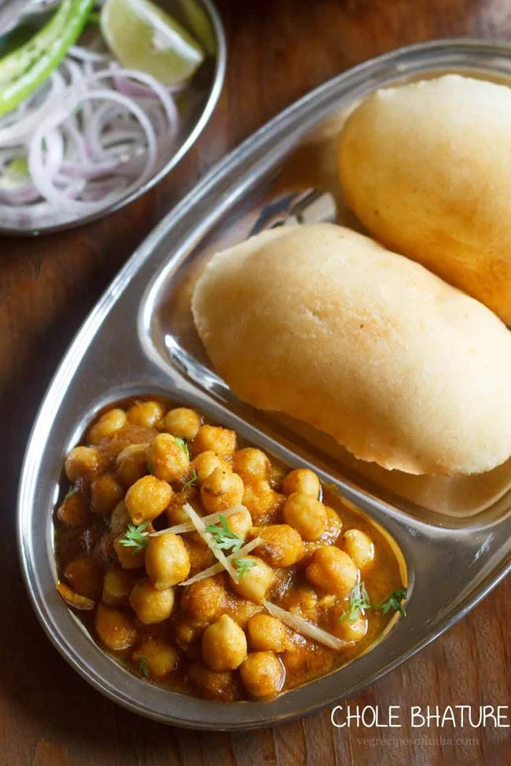

Bhature also known as Chana Bhatura is one of the most popular Punjabi dish liked almost all over India. Chole stands for a spiced tangy chickpea curry and Bhatura is a soft and fluffy fried leavened bread.
In this recipe post, I have included the step by step method of making the chickpea curry as well as a quick no yeast bhatura.
Bhatura is a spicy, tasty and a filling dish. I have eaten this dish at many places in Punjab and Delhi. Each restaurants or dhaba (eateries on highways) have their own flavors and taste in the chickpea curry. In some places the curry is very spicy, at other places it has tangy taste and the consistency of the curry also varies from slightly thick to semi-dry and dry.
This recipe has spicy flavors. This is my mom’s recipe and unlike other versions of chickpea curry recipes posted on the blog, this one has a homely taste and flavor. It does not taste like the restaurant or dhaba versions but taste very good.
Even the bhature size and flavor varies from restaurants to restaurants. The bhature ideally should be less oily and should puff fully. They should also be eaten hot and fresh. If you parcel the bhature from a restaurant then you won’t get the real taste as they become limp and dense.
I always make the bhatura recipes that are already posted on the blog. I have not yet tried making any other version of bhatura as these work best for me always.
As a side with the dish serve sliced onions, green chilies and lemon wedges. This a very filling dish and you might feel like having a short nap after eating it. Ideal for weekends or holiday time.
Less all-purpose flour (maida, refined white flour) and more whole wheat flour (atta) – The ratio of all purpose flour to whole wheat flour used in this recipe is approximate 1:3 respectively. Some of the other bhature recipes are made of only all purpose flour. Though you can make this recipe completely with either all purpose flour or whole wheat flour.
Made without yeast – The leavening is done naturally and similar to a sourdough starter. But here the starter has curd (yogurt) and baking powder or baking soda. This technique is the traditional Indian method to draw natural yeast from the air which helps in the leavening of the dough. In Hindi language it is also called as making “khameer” – where the word khameer refers to yeast. The bacteria culture in the curd (yogurt) also helps in fermentation.
Fermented dough – The flour starter is allowed to leaven and ferment overnight. So the dough has the typical aroma and sour notes of fermented food. The rolling and frying of the bread takes around 20 to 30 minutes. But the leavening of the flour mixture, takes 8 hours (overnight) plus 2 hours. The time also depends on the temperature conditions. So keep the starter and the dough in a warm place.
Fluffy and crisp – Since the dough is leavened and fermented, the bhature has a nice fluffy texture from within and puffs up really well in oil. Even though whole wheat flour is used in the recipe, you won’t feel the difference – the overnight fermentation help in giving a good soft texture to the bhatura.
Stays soft even after cooling – Usually, bhature becomes chewy after cooling at room temperature. But these bhature stay soft.
Knead the dough again. Shape into 12 to 15 balls
Roll each into 4 to 5 inch discs.
Heat oil or ghee and deep fry the bhatura in the same way as you would fry pooris. The oil has to be moderately hot. Use medium to medium-high flame while frying. When one side is golden, gently flip and fry the second side
Serve the Bhature hot with Chana Masala or Amritsari chole or Aloo Chole. Also serve wedges of lemon and sliced onions along with the chole.
make chole pea curry normal way